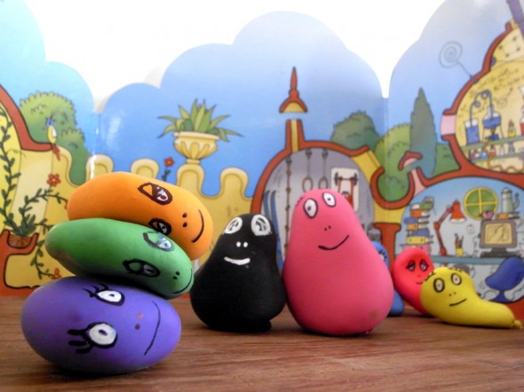
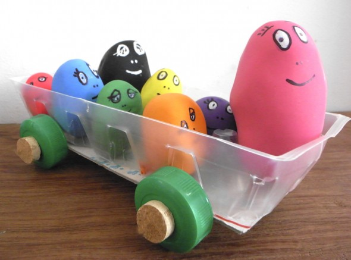
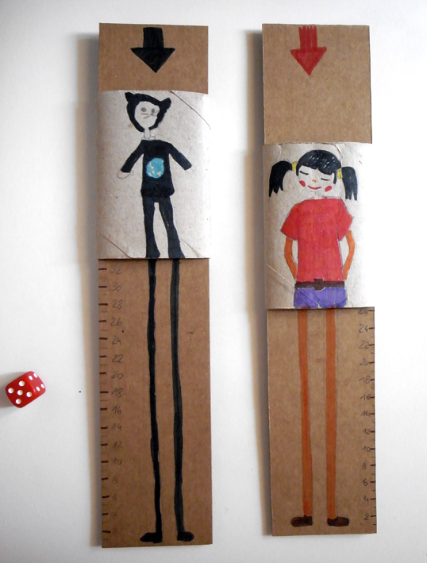
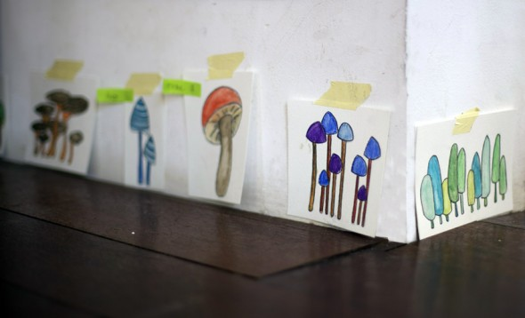
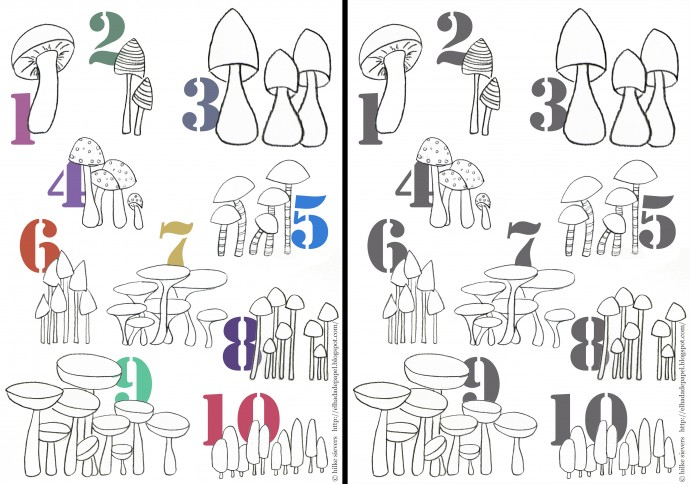
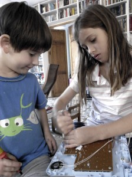
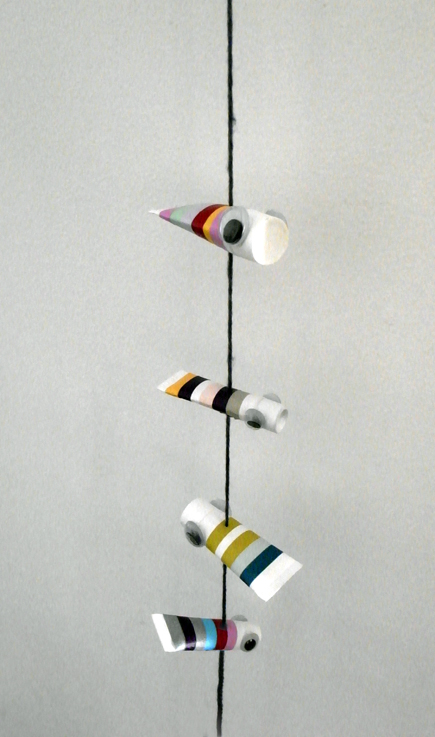

Unos globos llenos de harina son nuestra nueva familia Barbapapa. Puedes deformarlos como quieras.


Unos globos llenos de harina son nuestra nueva familia Barbapapa. Puedes deformarlos como quieras.

El automovil de los Barbapapas: Hemos convertido tapa de cartón de caja de huevos en un Barbapapá-móvil! .
Leer más →
Juego con cartón Hemos hecho una hendidura en un trozo de cartón con un ancho suficiente para introducir un rollo de papel higiénico plegado. En el…
Leer más →


Al principio estaban muy tristes ya que ni cambiando las pilas el juguete funcionaba, así que decidimos quitar los tornillos para reciclarlos. Al descubrir el interior…
Leer más →
Peces con tubos Hemos utilizado los tubos de muestra que se acumulan en el baño para otra cosa. Sólo necesitamos cinta adhesiva de color y unos…
Leer más →